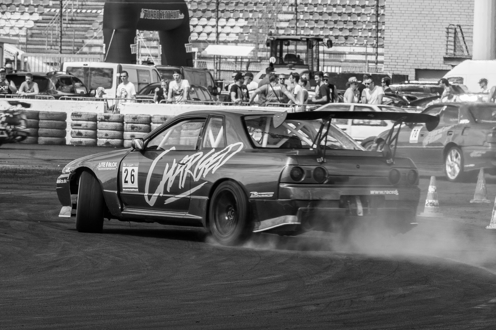
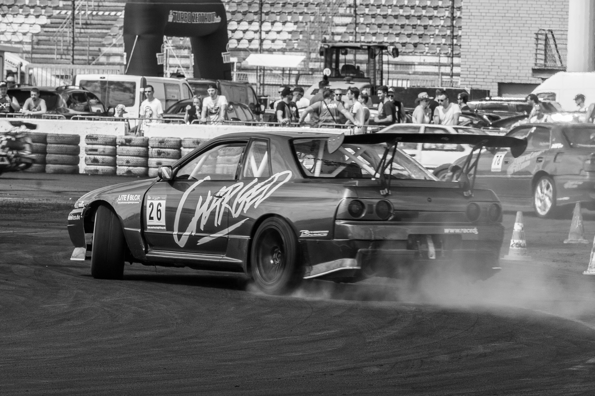

| age | gendre | experience |
|---|---|---|
| +18 | man | without driving license |
honestly drifting in public places is illegal so that's why you should be so far away from people
here some exemples of safe places:
 

Contrary to other forms of motorsport, drifting doesn’t require all that much equipment—or even space—to get started. All you need is a rear-wheel drive car, tires, and a safe (and legal) practice area where you won’t be annoying anyone. You can even hone your car-control skills in virtual reality if you’re not ready to get a set of wheels quite yet. However, when looking for a drift car, you’ll need one that’s rear-wheel-drive (RWD). Why? The simple answer is that drifting (or power sliding, if you’re so inclined) is easiest in a RWD setup. Sure, you’ll be able to yank the handbrake and countersteer in a front-wheel-drive car, but you won’t be able to sustain the slide. Once you’ve found yourself a good car—or if you’re brave enough to use your daily driver—turn off the traction control and let loose at your own risk. When learning, it’s easiest to start by doing donuts around a set of cones. Otherwise, you might end up stuffing your pride and joy in a wall before you can truly master the art of car control.
Modern tires are designed to stay planted to the road during cornering—good news for all of us. Behind the wheel of Toyota’s GR86, I was using nearly all of the power available in first gear to break the tires loose. Even with its standard set of Michelin Primacy tires (which are designed for efficiency over grip), the vehicle is one sticky piggy. It’s important to note that we were in a controlled environment, a race track, and not doing this on public roads.
This safe and isolated setting was perfect for demonstrating the differences between understeer and oversteer—drifting is simply a delicate balance between the two.
Understeer: when a car turns less than the driver commands. This often happens in hard cornering when asking for more grip than the front tires can give—leading to the car simply plowing straight forward.
Oversteer: when a car turns more than the driver commands. This often happens when adding throttle too early in the corner—leading to the rear of the car steering more than you asked it to.
Turning the steering wheel to initiate without sufficient throttle leads to an understeer. However, too much throttle leads to oversteer where the car simply spins out. Therefore, completing a drift is much more three-dimensional than it looks, requiring a delicate balance of throttle and steering angle. In other words, it takes some practice.
Fundamentally, getting a car to slide involves steering and stepping on the throttle in the right amounts at the right time. Start by making a nice circular path around a central cone at roughly 10 mph. If you’re driving a car with a manual transmission, make sure you’re in first gear. Feel free to experiment with left and right turns to see what works best, then stick to it. While maintaining that same steering angle, step on the gas aggressively (very nearly to full throttle) until the rear of the car begins to kick out. You’ll likely need to lay into the accelerator more than you think—better to spin out here going too fast and dial it back later.
Drifting feels a lot like finding the balance point while doing a wheelie on a bicycle—ie: always flirting with being in and out of control. Not enough power and you just end up where you started. Too much and you spin out. Thankfully, spinning out in a cloud of your own tire smoke is much less painful than falling off the back of a bicycle.
Once you can get the rear of the car to break loose, you’ll need to steer back the other direction to stop yourself from spinning out. Picture an imaginary circle that follows your trajectory as you drift around the cone; the goal is to trace this line with your front wheels. This is best described through slip angle, which involves the relation of where the front wheels are turned compared to where the car is actually going. This countersteer will most likely feel very unnatural if you haven’t spent time on a track. Much like lightning McQueen’s struggles in Cars 2, it took me a couple of tries to get the hang of it.
So for reference, if you’re turning to the left, you’ll have to steer to the right once the back end of the car kicks out—or vice versa if you want to drift in a right-hand corner. Once you’re sideways, throttle and steering play off of one another. More throttle, and you’ll need to turn the steering wheel more into slide. The opposite is true for when you’re using less throttle. While this sounds simple in theory, getting a feel for the right balance of the two takes quite a lot of practice.
Last but not least comes gathering everything up and straightening out the car after smoking the tires. More often than not, drivers failing at this is what leads to all of the crashes you see in YouTube compilations. The proper technique involves unwinding the steering wheel as you ease off the throttle. The worst thing you can do here is turning the steering wheel too much once the car breaks sideways; also known as overcorrecting, this forces the car in the opposite direction you want to go and is generally a one-way ticket to a crash. This is another fine reason why you should learn to drift in a controlled environment away from any obstacles.
Speaking of, there was a drifting competition among the journalists to see who could do the longest drift before spinning out. After all was said and done, I took home the win for Popular Mechanics with two laps around the skidpad before spinning out.
After that, I felt like an absolute driving god. That was right up until I finished the day riding passenger with professional Formula Drift racer Ryan Tuerck as he hucked his 1,000-horsepower Toyota GR Corolla drift car around the race track. It’s one of the most interesting race cars I’ve been in, which I wrote about at length. It was acoustically violent in the best way, but I was mostly blown away by how comfortable it was. Even with such impressive power, Tuerck’s direction changes during the demo run were buttery smooth.
Having seen Tuerck—a.k.a. “Hampshaa”—in Formula Drift competition, I was blown away by the precision that he executed with the car completely sideways. It absolutely boggles the mind seeing these guys do battle in person only inches away from one another. The goal in drift racing is to get as close to the other driver as possible while maintaining proximity with a number of “clipping points” set up along the course. If you’re a car enthusiast that hasn’t been following drift racing, give it a shot. You won’t be disappointed.
Matt Crisara is a native Austinite who has an unbridled passion for cars and motorsports, both foreign and domestic, and as the Autos Editor for Popular Mechanics, he writes the majority of automotive coverage across digital and print. He was previously a contributing writer for Motor1 following internships at Circuit Of The Americas F1 Track and Speed City, an Austin radio broadcaster focused on the world of motor racing. He earned a bachelor’s degree from the University of Arizona School of Journalism, where he raced mountain bikes with the University Club Team. When he isn’t working, he enjoys sim-racing, FPV drones, and the great outdoors.
THE DRIFT TECHNIQUE To be able to launch the car into a slide, it is therefore necessary to play on the transfer of the masses during braking. While adding a swerve to the inside of the turn and then immediately to the outside so that the rear axle loses its grip and is relieved.
THE DRIFT TECHNIQUE To be able to launch the car into a slide, it is therefore necessary to play on the transfer of the masses during braking. While adding a swerve to the inside of the turn and then immediately to the outside so that the rear axle loses its grip and is relieved.